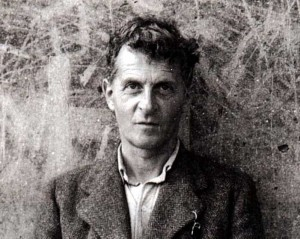
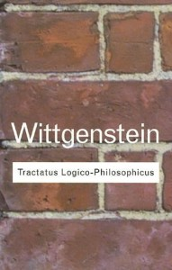

Wittgenstein: Dahinin Görevi 2.Bölüm
Efenim geçen bölümde Wittgenstein’i gece gözcü görevinde titrerken bırakmıştık, amcamız gözcü görevini bir ay kadar sürdürür, neyse ki sağ kalmayı başarır. Daha sonra topçu olarak cephede yer almaya devam eder, bir sürü cesaret madalyasını cebe atarken. Sonra İtalya cephesine gönderilir ve burada savaşın sonunda esir alınıp hapse atılır. Savaştan önceki ve sonraki Wittgenstein bam başka insanlardır. Sade mantık ve dil ile ilgilen, tanrının varlığı konusunda Cambridge’li bir akademisyene yakışacak düzeyde şüpheci, inancın insan dünyasında ki yerini umursamayan dünyayı mühendis gözleri ile gören bir adamdan, insanın dünya üzerindeki varoluşu gibi metafizik konularla ilgilenen, inanç gibi bilimin açıklayamayacağı alanlar olduğunu düşünen dindar bir filozofa dönüşür. Bu devrede okuduğu ve elinden düşürmediği Tolstoy’un Gospel in Brief (Türkçesini bulamadım, kesin çevrilmiştir ama kim bilir hangi isimle) ve Schopenhauer’in İstem ve Temsil olarak Dünya (The World as Will and Representation, Türkçeye İsteme ve Tasarım olara Dünya diye çevrilmiş, gönlüm elvermedi ismin mundar olmasına) düşüncelerinin şekillenmesine en az savaş sırasında yaşadıkları kadar etkili olmuştur. St.Augustine, Dostoyevski ve Kierkegard’i da ekleyebiliriz tabi o listeye. Bu değişimle birlikte savaştan önce sade mantık ve dil üzerine üzerine olan kitabına, savaş sırasında mistik bir element eklenmiştir, ki bu son kısmın kitabın en önemli mesajı olduğunu düşünür Wittgenstein ki asıl hiç kimsenin doğru dürüst anlayamadığı kısım da bu olur. İtalya’da hapishanede kitabını bitirip Russell’in yayınlaması için kitabı İngiltere’ye gönderir.
Tractatus-Logico Philosophicus adı gibi görkemli bir kitaptır prenses. Wittgenstein bu kitapta Russell ve Frege’den öğrendiği mantık alt yapısı ile dili ve insanın dünyasını mantıksıl atomcu (Logical Atomism) bir çerçevede inceler. Dilin ve insan dünyasının merkezine yaptığı bu yolculuk onu felsefi tümcelerin son tahlilde anlamsız olduğuna, anlamlı olan tümcelerin sadece bilimin ürettiği tanımlıyıcı tümceler olduğuna, bunun dışında kalan mistik realmin dil ile ifade edilemeyeceğine sadece icgudusel olarak kavranabileceğine ve velhasıl felfesefenin bir şey söyleyebilecek dilsel altyapısı olmadığına götürür. Kitabın sonunda bu kitabı anlayan bu kitaptaki tümcelerin de anlamsız olduğunu anlar ve onu çöpe atar der ve kitabın son cümlesi: “Whereof one cannot speak thereof one must be silent”, yani konuşamayacağın yerde susmalasın.
Ve kendisi de susar. Savaş bittikten sonra Cambridge’e dönmek gibi planı yoktur artık, kitabı yayınlamaya çalışır bir sure, yayıncılar kitabı beğenmez, Russell ve Moore dahil kimse kitabı doğru düzgün anlayamaz, Russell kitabın ilgi çekebilmesi için anladığı kadarıyla bir önsöz yazar, Wittgestein bu önsözü beğenmez, yayıncılar bu önsöz olmadan yayınlamaya hiç yanaşmazlar, Wittgenstein’in kafası iyice atar ve Russell’a “Ne halt yerseniz yiyin bu kitapla, ben daha fazla bunla uğraşamam” der ve çekip gider. Nereye mi? Avusturya köy okullarında hocalık yapmaya 🙂
Bunda ki sonraki sekiz yıl Wittgenstein’in hayatında traji-komik bir devre. Felsefeyle işini bitirdiğine ve hatta felsefeyi bitirdiğine inan dahi abimiz, köylerde hocalık yapmaya çalışır. Ama Wittgenstein gibi sinirleri pek sağlam olmayan, zihnen aşmış ve karakter olarak mükemmeliyetçi bir hoca düşman başına prenses. Çalıştığı okullarda sinirlenip olay çıkarması, öğrencilerini anlamıyorlar diyip pataklaması, öğrencilerinin velilerinden sen kimi pataklıyorsun diye dayak yemesi, bunun üzerine okul değiştirmesi ve tekrar aynı şeylerin yeniden yaşanması. Tekrar ve tekrar. Bir süre sonra ablası dayanamaz ve Viyana’da yeni yaptırmakta olduğu eve yardım etmesi bahanesi ile Wittgenstein’i çağırır. Mimara yardımcı olması amacıyla Viyana’ya gelen Wittgenstein, kısa sürede mimarı kendi yardımcısına çevirip evi kendi istediği gibi tasarlar ve yapar. Viyana’daki bu eve genelde Tractatus’un dünyadaki karşılığı derler. Mimarı ve mühendislik olarak görkemli bir yapı olmasının ötesinde, klorifer peteklerinden kolon geçişlerine kadar her detayı üzerinde düşünülmüş ve hesaplanmış bir mükemmeliyet abidesidir. Hatta o kadar mükemmel o kadar bu dünyanın ötesindedir ki ablası eve taşındıktan bir süre sonra başka bir eve taşınır: Bir anıt olarak ne kadar güzelse, içinde bir ailenin yaşması için de o kadar soğuk, ruhsuz ve kasvetlidir.
Wittgenstein’in akademiden uzak olduğu bu yıllarda, akademide Tractatus’un ünü artmaktadır. Bu dönemde Viyana çemberi (Vienna Circle) diye anılan, çoğunlukla felsefeyle ilgili mantıkçı ve matematikçileren oluşan küçük ama etkili bir çevrede 20.yüzyıla damgasını vuracak Mantıksal Pozitivizm (Logical Positivism) akımı gelişmektedir. Kimler yoktur bu grubun içinde, Moritz Schlick‘in liderliğinde Gustav Bergmann, Rudolf Carnap, Herbert Feigl, Philipp Frank, Kurt Gödel, Hans Hahn, Tscha Hung, Victor Kraft, Karl Menger, Richard von Mises, Marcel Natkin, Otto Neurath, Olga Hahn-Neurath, Theodor Radakovic, Rose Rand ve Friedrich Waismann. Tractatus Logico-Philosophicus ise incili olmuştur bu grubun. Wittgenstein hayatı boyunca Viyana çemberine mesafeli durduysa da, Schlick, Ramsey gibi onunla tanışmaya ve konuşmaya gelenleri Tractatus’u anlamıyorsunuz siz diye süpürgeyle kovaladıysa da, Viyana çemberinden elemanlar en azından bir ise yaradılar: Wittgenstein’i Tractatus’da derin hatalar olduğuna ikna ettiler.
8 yıl sonra Cambridge’e dönüşü görkemli olur, eski dostu John Maynard Keynes tren garında onu karşılar ve günlüğüne “Tanrı döndü” diye yazar. Aslında Wittgenstein’in planı Tractatus’un eksiklerini giderip hızla topuklamaktır ama eksiklerin üzerine çalıştıkça, hatasının derinliğini görür ve en sonunda Tractatus’u komple çöpe atar. (Burada ki felsefi detaylar haylice derin ve karmaşık olduğu için hiç teşebbüs bile etmiyorum, birgün bir bira muhabbetinde beni yakalarsan sorasın prenses) Cambridge’de kalışının tahmin ettiğinden uzun süreceği anlaşılınca bir sorun belirir: Wittgenstein’ın ne doktorası, ne de felsefede bir lisan derecesi vardır. Russell ve Moore, Wittgenstein’i hoca olarak işe alabilmeleri için fi tarihinde birlikte yaptıkları tartışmaları ders olarak sayarlar ve Tractatus’u Wittgenstein’in doktora tezi olarak sunarlar. Tez savunması müthiştir. Russell ve Moore sınama komitesindedir, Wittgenstein’a Tractatus’la ilgili daha öncede sordukları ve hala anlamadıkları bazı soruları sorarlar. Wittgenstein biri iki soruya yanıt verdikten sonra sandalyesinden kalkar, omuzlarına elini koyar ve “Siz de ben de biliyoruz ki Tractatus’u anlamıyorsunuz ve anlayamayacaksınız” diyip salonu terkeder. Russell ve Moore’un Tractatus’u doktora tezi olarak kabul notu: “Hiç şüphesiz ki bir dahinin eseri.”
Wittgenstein bunda sonraki onaltı yıl boyunca Cambridge’de hoca olarak kalir. Derslerinin adı sadece “Felsefe” dir. Herkes merakla Wittgenstein yayınlayacağı kitapları beklemektedir ama o ölene kadar hiçbir şey yayınlamaz. Bu devrede yayınlanan tek kitabı, öğrencilerin kafası bir şey almıyor bari ellerinde bir şey olsun diye dağıttığı ders notları. Biri mavi, diğeri kahverengi kapaklı defterlerde dağıtılan bu notları öğrencilerin elinde gören felsefeciler “Ver bakıyım evladım şunu bi bakayım” diyip, “Mavi ve Kahverengi Kitaplar” adı altında yayınlarlar, Wittgenstein tabi sinir olur bu duruma. Öldükten sonra bu on altı yıl boyunca tuttuğu notları “Felsefi Araştırmalar” (Philosophical Investigations) ve “Kesinlik üzerine” (On Certainity) adlı isimlerle yayınlanır. Wittgenstein’ın sonraki dönemi diye anılan Tractatus’u tamamen reddettiği bu devrenin eserleri Tractatus’un mantıksal kesinliğinden çok uzaktadır. Dünyanın ve dilin rasyonel mantık temelleri üzerine inşa edildiğini düşünmüyordur artık. Felsefi Araştırmalar’da dilin belli kuralları olan, ortak kabul edilen geleneklere dayalı bir oyun olduğunu savunur. Bir kelimenin anlamını anlamak için onun nasıl kullanıldığına bakmak lazım der. Felsefenin hala anlamsız olduğunu düşünür, dili asıl amacı olan gündelik hayattaki kullanımından başka bir yerlerde kullanmaya çalışıp yolunu kaybeden garipler olarak görür felsefecileri. Kendisi artık terapi amaçlı felsefe yapmaktadır, yolunu kaybetmiş felsefecilere yollarını kaybetmiş olduklarını anlatmak için. Tractatus Viyana çemberinin etkisiyle 20. yüzyılın ilk yarısına damgasını vurduysa, Felsefi Araştırmalardan etkilenen Ryle, Anscombe, Dennett, Quine, Kripke gibi isimlerle Wittgenstein 20. yüzyılın ikinci yarısına da sadece felsefede değil cognitive science, psikoloji, linguistik gibi alanlarda da damgasını vurur.
Dünyanın en zengin ailelerinden birinde dünyaya gelen, babasından kalan vasiyetle bir dönem avrupanın en zenginlerinden biri olan Wittgenstein, vasiyetini bağışladıktan sonra hayatının bu son onaltı yılını oldukça münzevi bir şekilde geçirir. Çok fazla bir eşyası yoktur, sade giyinir, basit yaşar. Kaba saba tavır ve davranışları, doğru bildiğini direk olarak insanların süratına çarpması, çabuk köpürmesi ile akademide kendisinden hiç hoşlanmayan geniş bir çevre kazanır. Bir çok yakın arkadaşını akademiyi bırakıp daha somut bir zanaatla uğraşıp, alın teriyle parasını kazanması için ikna eder. 1956 yılında bir arkadaşının evinde hayata gözlerini yumar. Ölmeden önceki son sözleri: “Tell the others that I have had a wonderful life” yani “Diğerlerine söyle, çok harika bir hayatım oldu.”
NazIm
ps: Wittgenstein’in hayatı hakkında müthiş bir kitap okumak istersen prenses, Ray Monk’un Wittgenstein: Dahinin Görevi isimli kabalcı yayınlarından çıkan kitabı şiddetle tavsiye edilir.


{kind=link}
{kind=link}
{kind=link}
{kind=link}
Bunca zorluklara rağmen , wittgenstein ın kitabının doktora tezi olarak sayılmasında , yada russell ve moore ‘un anlamamalarına rağmen kitabı ve felsefesini kabul etmeleri , gerçekten onların wittgenstein felsefesini anlayıp benimsediklerini mi gösterir , yoksa wittgenstein gibi parası bol , hükmü ve sözü geçen bir adamı üst mercileri taşıma isteğini mi gösterir ?
(yanlış anlaşılmasın , analitik felsefeyi çok severim 🙂 )
Saka yapiyorsun herhalde 🙂 Yazida da bahsettigim gibi Tractus, yani kitap ve kitabin icindeki fikirler, Wittgenstein’in ortalikta bile olmadigi 8 yil boyunca akedemide yayilip oyle bir etki yapti ki Wittgenstein Cambridge’e dondugunde yine cok unlu bir ekonomist Keynes kral dondu diye gunlugune not dustu. 20.yy yazilmis felsefe eserleri icerisinde direk ilk bese girecek bir kitaptandan bahsediyoruz, Russell ve Moore anlamadi dediysem, kitabin bazi bolumlerini anlamadi demek istedim, ne kadar degerli bir eser oldugunu anlamayacak kadar salak degiller sonucta. Tractus’un veya Wittgenstein’in fikirlerinin parayla pulla alakasi yok, felsefede zaten parayla pulla hukmunun sozunun gecmesiyle hicbir sey yapamazsin, dene istersen 🙂
wittgenstein ile okudugum en guzel yazıydı sanırım. öncelikle teşekkür ederim enfesti.
hayatimda bir an gelmişti ve wittgenstein’in anlatmaya calistigi herseyi anlamaya zorlamistim kendimi. Tractatu’u okudum, altını cizdim, tekrar okudum. neden bilmiyorum ama her cümlesi bende derin bir anlam bırakıyor.
keske daha daha cok yazsaydi diyoruz.